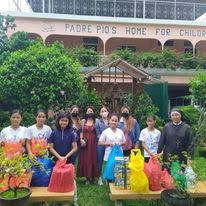

Padre Pio's home for children is an organization that aims to give orphane children the basic needs and the basic lessons and values. PPHC was founded by
Fr. Domenico Labellarte, an Italian priest, who was also the spiritual son of Saint Padre Pio. This institution was implemented in the Philippines when
Msgr. Josefino Ramirez invited them here to the Philippines. The institution was founded when Fr. Domenico was the spiritual son of Saint Pio. The sisters who
were assigned here in the Philippines to implement this institution are the one operating this institution to fulfill their mission. And is now successful as
it has helped a lot of children in giving them home and family.
Significance
The significance of this problem is that we should be giving more attention to the children and their well-bring, since they are also human and we should be giving them much care and attention. The identified problem is the
personal issues that the children have gone through in their past experiences, the problems that the children are going through are their emotional, physical and mental stae in the institution. This problem has probably existed
for centuries and still continues to this day, the evidences that we have to prove our claim is that the sister in the interview has stated the well-being of the children.
Rationale
The project is very important as it will build more relationships for the children in the institution and to show love for the children that they really
deserve. It helps build more socializing and caring to the children and to show them that they are being loved by other people. The project can further
improve if we discover more information directly from the institution and research more. We can also lessen this issue by having equality and fairness amongst
the relationship so that we won't deal with lots of problems that need to be solved at once. This project is very important since Saint Pio was credited with
thousands of miraculous cures during his lifetime, and is still venerated as a miracle-worker.

Web designer
Lorenzo Limjap
Hello, my name is Gabriel Lorenzo M. Limjap, I am a junior high school student of Grade 9 Campion and I like to do things that I dont normally do like trying out new things in life and finding answers to
my own problems. I also like to do certain amount of things, like playing games, eating, singing, helping, bond, and so much more. I sometimes try to also
face my fears in socializing since im not good at doing it.